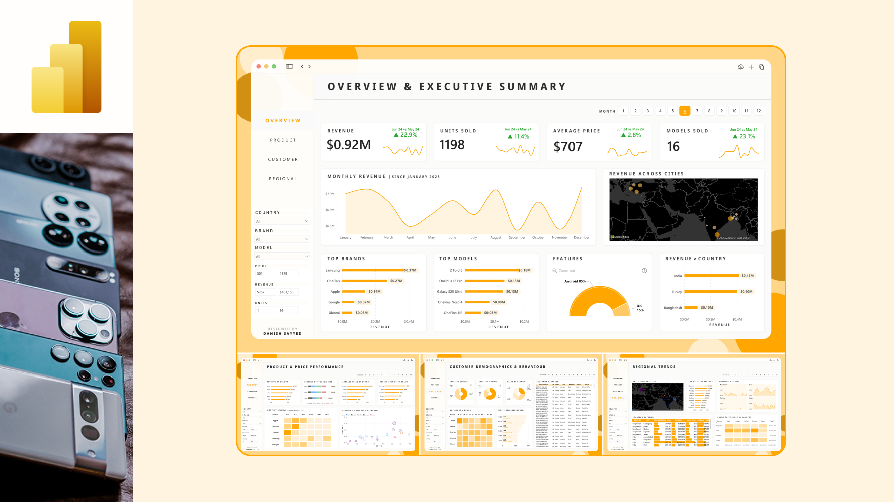
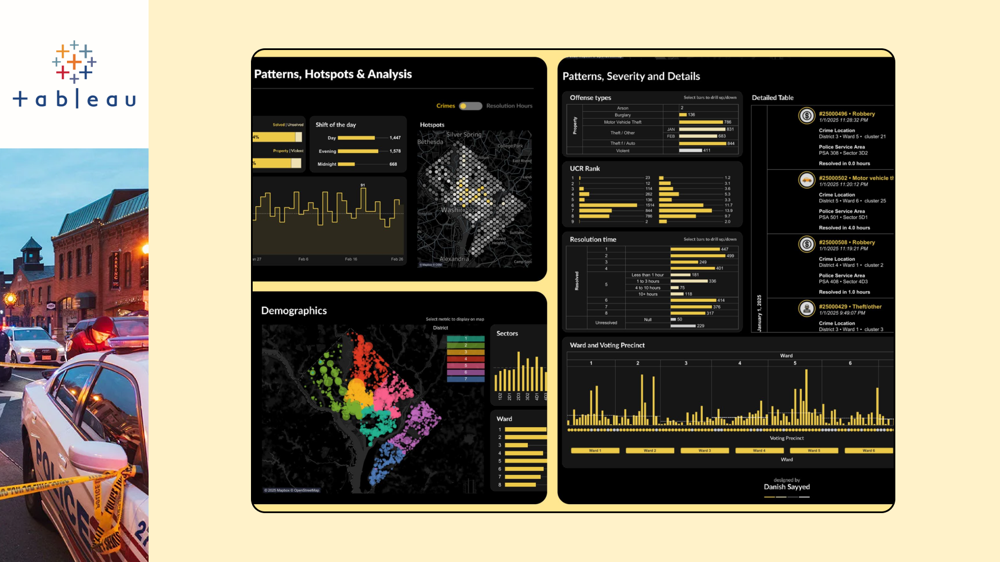
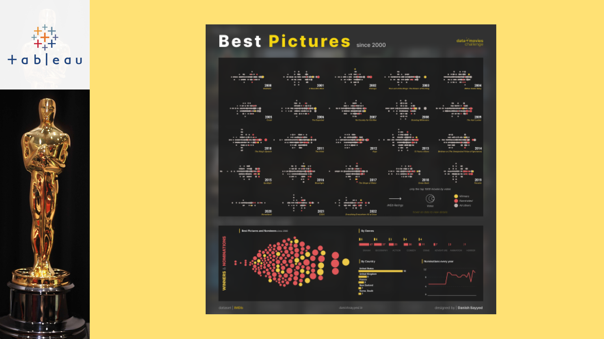

Turning raw data
into decisions
that hold up live.
I'm Danish — I build real-time analytics for televised cricket, dashboards that make sense of messy numbers, and models that move past guesswork. 6+ years, 220+ live matches, zero patience for data that lies.

Data with context, not just charts.
The short version: engineer turned analyst, allergic to dashboards that look pretty but say nothing.
Danish Sayyed
I'm Danish Sayyed, a Senior Data Analyst based in Mumbai who turns messy data into insights people can actually use. With 6+ years in high-pressure environments, I focus on making sure decisions are driven by clarity, not guesswork.
At Hawk-Eye Innovations, I've worked on 220+ live cricket matches where timing and accuracy aren't optional. When data shows up late or wrong, it's not just a bug, it's a broadcast problem. That kind of pressure teaches you precision fast.
I started out in Mechanical Engineering, but quickly traded machines for SQL, Python, and Tableau. Now I build dashboards, models, and systems that actually move the needle, not just look impressive in meetings.
Real-Time Sports Analytics
Live data pipelines for televised cricket, delivering insight under strict latency constraints.
Predictive Modeling
Regression and forecasting models in Python that uncover patterns and support decisions.
Visualization & Storytelling
Interactive Tableau and Power BI dashboards that turn complex data into clear action.
Data Quality & Automation
Reporting workflows automated end-to-end, cutting manual effort and human error.
Six years, three roles, one obsession with clean data.
Experience
-
Data Analyst, Hawk-Eye Innovations
Live cricket matches, real-time insights during high-pressure broadcast situations, and decision-review systems where accuracy and timing were critical.
-
Data Analyst, Intelligent Cricket
Worked with teams and coaches to turn match data into usable insight. Built dashboards and reports, improved data quality, simplified processes.
-
Junior Data Analyst, Allied Aero Systems
Tracked project timelines, costs and progress. Built dashboards to identify issues early and bring structure to data usage.
Education
-
Bachelor of Engineering, University of Mumbai
-
Diploma in Engineering, MSBTE
-
Secondary School Certificate, Maharashtra State Board
Tools & skills — live signal per skill, like an UltraEdge readout
44 dashboards, one obsession: make numbers make sense.
Tableau, Power BI, Python and Excel work spanning cricket, finance, sport and everyday curiosity.
-
 Tableau
Tableau
Money Heist
Viz that tells the story of the data behind TV shows you love. When it comes to TV Series, Money Heist has always been one of my most recent favorites.
-
 Tableau
Tableau
Survival and Glory - The Everest Story
A single page infographic visual showcasing the numbers behind the ultimate glory to reach the top of the world.
-
 Power BI
Power BI
Social Media Analytics
This comprehensive social media analytics dashboard tracks global platform performance, content intelligence, and engagement trends, highlighting key metrics like click-through rates and high-performing hashtags to optimize multi-channel digital strategies.
-
 Tableau
Tableau
30 years of the PIXAR journey
This series of dashboards provides a comprehensive multi-departmental overview, integrating high-level sales performance, inventory tracking, financial summaries, and operational efficiency metrics into a unified, data-driven analytical reporting system.
-

Power BIMobile Sales Dashboard
This mobile-optimized dashboard provides a streamlined overview of sales and profit performance, featuring dynamic geographical maps, customer segment breakdowns, and monthly trends to enable real-time, data-driven decision-making.
-

TableauWashington Crime Data
This dashboard visualizes Washington’s crime landscape by tracking total incidents, clearance rates, and yearly trends across major categories like property and violent crimes to assist in public safety analysis.
-
 Tableau
Tableau
MTA Post-Pandemic Ridership Recovery
This interactive transportation dashboard monitors Metropolitan Transportation Authority performance, tracking monthly ridership and service reliability across subways and buses to evaluate post-pandemic recovery and long-term transit efficiency.
-
 Tableau
Tableau
Supply Chain Analytics
This interactive supply chain dashboard monitors critical logistics KPIs, including fulfillment rates, inventory levels, and freight costs, to optimize warehouse efficiency and ensure timely global product distribution and delivery.
-

TableauBest Pictures since 2000
Dive into the top 1000 movies by vote count since 2000 with the winner and nominations every year


What it's like working with me.
-
“

Bertie Kennedy
Head of Performance Analysis, Intelligent CricketDanish was a great part of the team at Intelligent Cricket. His ability to visualise data and make it easy to interact with enabled insights to be unlocked by all end users. He showed strong initiative on many tasks and took them on and went above and beyond. I will be watching keenly on his future progress and how he continues to develop.
-
“

Waseef Khan
Head Analyst, Lahore QalandarsDanish played a crucial role in helping me during the initial stages of my career. His guidance, support, and encouragement gave me the confidence to move forward and grow professionally. I am truly grateful for his mentorship and generosity.
-
“

Gaurav Rao
Match Coding Manager, NV PlayI had the pleasure of working closely with Danish during his time at Intelligent Cricket as a Cricket Data Analyst. He consistently impressed me with his data visualization skills and was extremely dedicated to his work. He approached every task with a positive attitude and a strong sense of professionalism. His sincerity, dedication, and exceptional work ethic make him an invaluable addition to any team or organization. I am confident that he will continue to excel in his future endeavors.
-
“

Vaibhav Gupta
Senior Data Analyst, ConcentrixI highly recommend Danish for any data analysis role that requires expertise in Tableau and Power BI. He possesses a unique blend of technical skills, data visualization proficiency, and analytical thinking that make him a valuable asset to any organization. He has demonstrated a deep understanding of both Tableau and Power BI tools and is proficient in creating complex data models, designing interactive dashboards, and implementing advanced features within these platforms.
-
“
Vijay Kumar
Data Analyst, EXLDanish Sayyed was an exceptional data visualization analyst at Intelligent Cricket and used his expertise to deliver valuable insights that helped teams and coaches make data-driven decisions. His ability to transform complex data into clear, actionable visualizations has been a game-changer for our team. Danish consistently provided high-quality analyses, from player performance to match strategies, helping us gain a competitive edge. I highly recommend him for anyone looking to leverage data for success in cricket analysis.
Have a dataset that needs a story?
Drop a message and I'll get back to you — usually within a day.